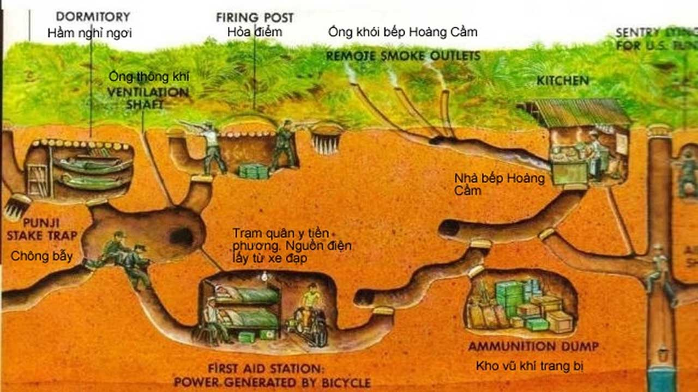
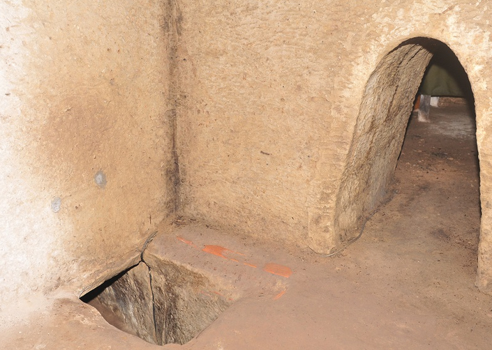
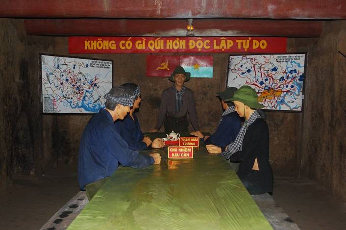

Địa đạo Củ Chi được đào trên nền đất sét pha đá ong đặc trưng của vùng, loại đất này có độ bền cao, ít bị sụt lở và rất cứng chắc. Về cơ bản, hệ thống địa đạo trong di tích chạy ngoắt nghéo trong lòng đất, từ đường “xương sống” (đường chính) tỏa ra vô số nhánh, ăn thông với nhau, hoặc độc lập, tùy theo địa hình. Có nhiều nhánh trổ rộng ra sông Sài Gòn, để khi bị tình thế nguy kịch, có thể vượt qua sông sang vùng căn cứ Bến Cát (Bình Dương). Hệ thống địa đạo được chia thành 3 tầng sâu khác nhau: - Tầng 1: Nằm cách mặt đất khoảng 3 mét. Độ sâu này giúp tầng 1 có khả năng chống chịu được sức công phá của đạn pháo và sức nặng của xe tăng, xe bọc thép di chuyển phía trên mặt đất. - Tầng 2: Nằm sâu hơn, cách mặt đất khoảng 5-8 mét. Tầng này có thể chống lại được sức phá hủy của các loại bom cỡ nhỏ. - Tầng cuối cùng: Là tầng sâu nhất, nằm cách mặt đất từ 8 đến 12 mét. Tầng này là nơi an toàn nhất, ít bị ảnh hưởng bởi các loại bom, pháo thông thường. Lối lên xuống giữa các tầng hầm được bố trí bằng các nắp hầm bí mật, được ngụy trang rất khéo léo phía trên, nhìn từ ngoài khó lòng phát hiện, thường trông giống như những ụ mối đùn tự nhiên. Không khí được lưu thông vào trong địa đạo thông qua một hệ thống lỗ thông hơi đặc biệt được bố trí và ngụy trang rất kín đáo. Dọc theo các địa đạo ngầm, cứ khoảng 10m-15m đều có khoét những lỗ thông hơi và thông gió bí mật, thông lên trên mặt đất giống như ụ mối đùn. Kết nối với mạng lưới đường hầm chính là các căn hầm rộng hơn, được sử dụng làm nơi mắc võng nghỉ ngơi, chứa dự trữ vũ khí và lương thực. Bên trong địa đạo còn có giếng nước, khu vực bếp Hoàng Cầm (loại bếp đặc biệt giúp khói thoát ra ít bị phát hiện), hầm chỉ huy cho các cuộc họp và chỉ đạo, hầm giải phẫu để cứu chữa thương binh. Thậm chí còn có những căn hầm lớn hơn, với mái lợp thoáng khí và ngụy trang tinh vi, được sử dụng làm nơi sinh hoạt văn hóa, xem phim hoặc biểu diễn văn nghệ để nâng cao tinh thần cho chiến sĩ.



×